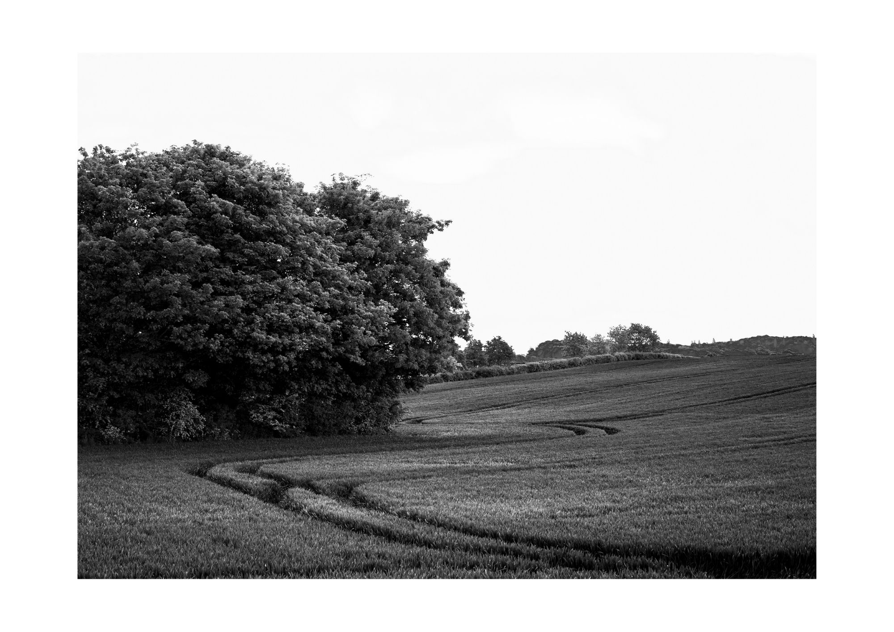
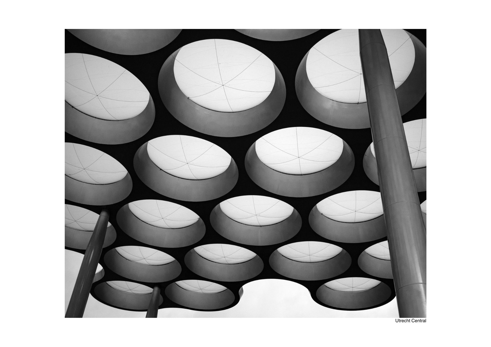
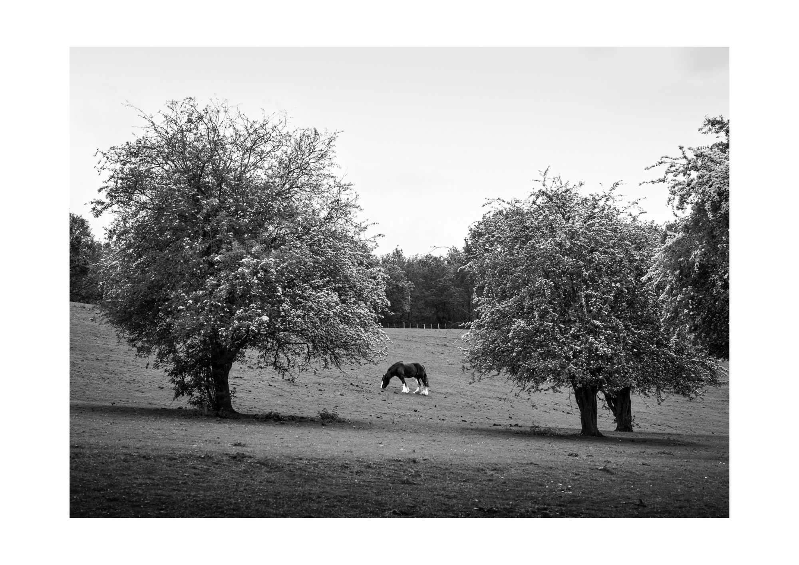

Check out my recently published series Architecture, or my latest work: MARGINS.
Check out the about page to find out more about me and my work.
Want to keep in touch? Sign up for my mailing list on the contact page.